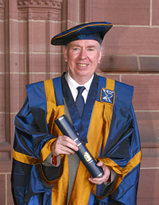
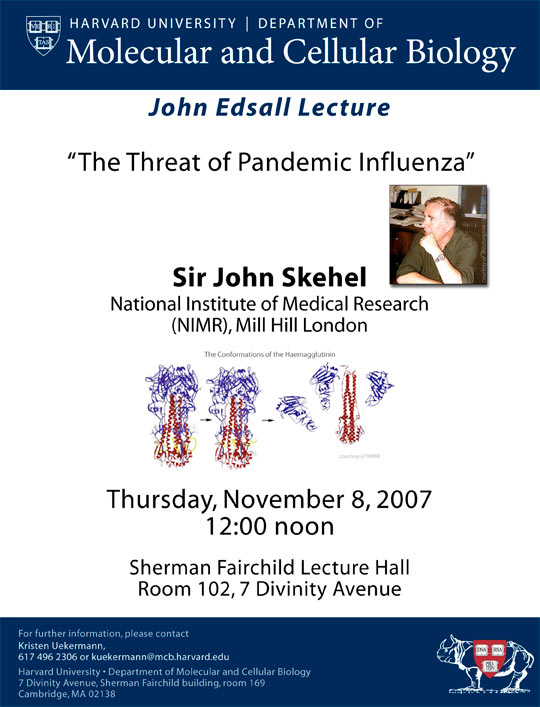

News Archives : 2007 : Sir John Skehel to Deliver 2007 John T. Edsall Lecture
by Kristen Uekermann
November 2, 2007

Sir John Skehel
The annual John T. Edsall Lecture returns on Thursday, November 8th with Sir John Skehel of the National Institute of Medical Research.
Sir John Skehel, a leading virologist, has been at NIMR (National Institute for Medical Research) in the UK since 1969. He served as Director many of those years, retiring from that position in 2006. He was inducted to the Royal Society in 1984 and is also on the council of the Academy of National Sciences. He was knighted in 1996. He is well known at Harvard for his collaboration with Don Wiley to decipher the mechanism of membrane fusion, which lasted until Wiley’s death in 2001.
Sir John has spent his career understanding the influenza virus. His presentation of the 2007 Edsall Lecture, the “Threat of Pandemic Influenza” will take place on November 8th, 2007 in the Sherman Fairchild Lecture Hall and will focus on the 1997 Hong Kong infections of avian influenza and the spread of the H5N1 virus. Skehel states, “There has been an increased threat of an influenza pandemic. Worse, a high proportion of the human cases reported to date - 204 out of 333 cases - have been fatal. In this situation it is not surprising that the WHO and many individual countries have made plans for their response to a pandemic”. Skehel’s lecture will present a scientific background to these pandemic crisis plans.
Sir John’s most famous work has been on the haemagglutinin (HA) virus. He discovered that the influenza virus envelope fuses with the endosomal membrane of cells after a low pH triggers a conformational charge in the virus. His lab currently lab focuses on the Influenza virus that infects cells by fusing with endosomal membranes – a process that is mediated by the Haemagglutinin virus membrane glycoprotein.
The annual lecture series is in memory of John T. Edsall, of Harvard Biochemical Sciences. Edsall’s contribution to science was perhaps only overshadowed by his devotion to teaching, forming a course on biophysical chemistry and codifying this with a text book, as well as serving as a tutor for more than forty years (Head Tutor for twenty of those) and contributing to the development of a biochemistry graduate program at Harvard. Upon his retirement, Konrad Bloch spoke of him, “Throughout his career he gained prestige without seeking it, for he served science rather than used science for his own purposes.”
